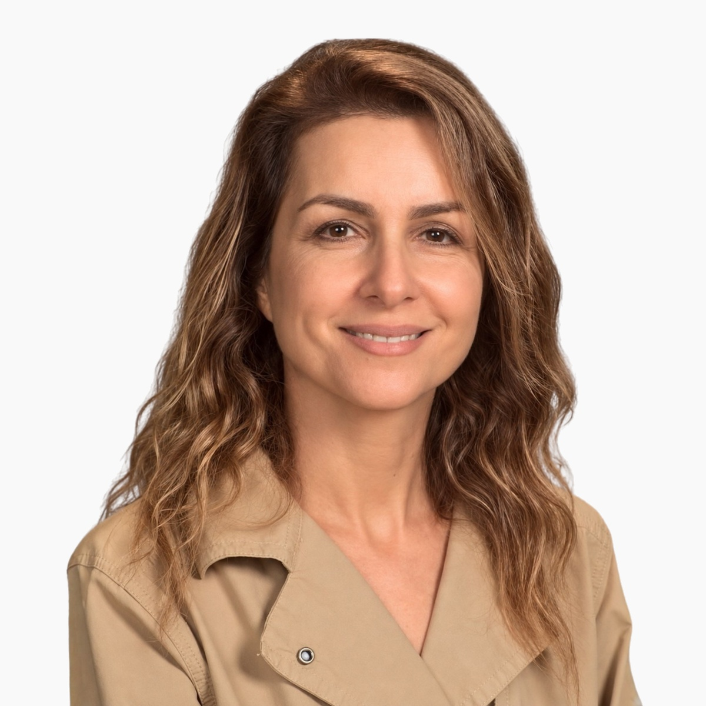
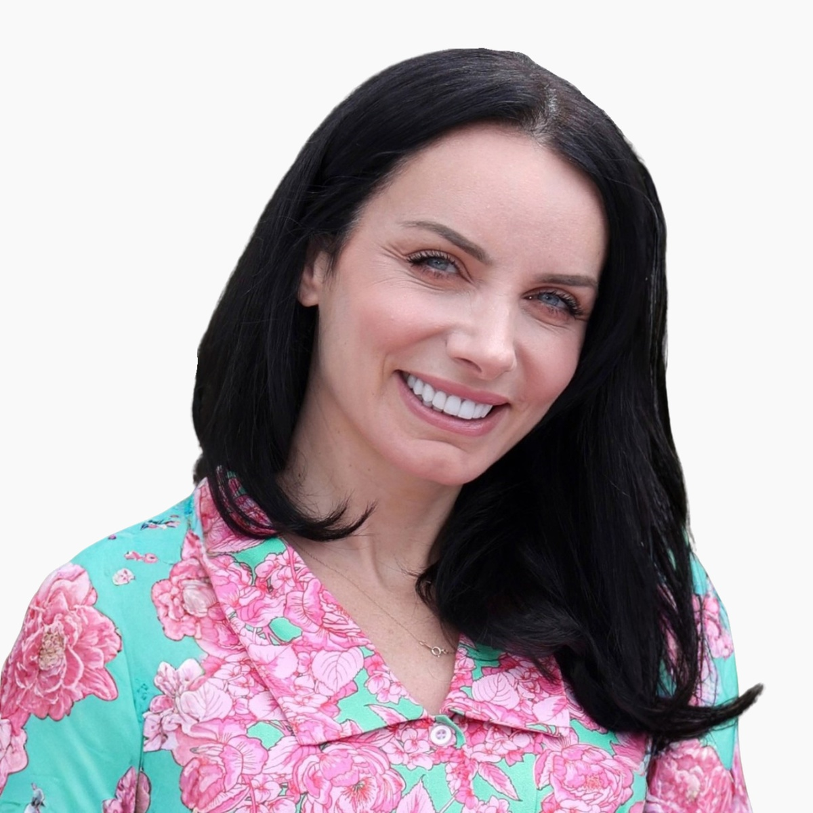

ADLEA Specialist Teams
Meet the educators and specialists providing focused program support across ADLEA's work.

Barbara Ter-Papyan
Teaching and Learning Specialist
Barbara Ter-Papyan is a distinguished educator and linguist with more than 40 years of instructional and leadership experience in Armenia and the United States. She holds a BA in Pedagogy and an MA in Linguistics from Yerevan Brusov State University, along with an MA in Administration and Leadership earned after immigrating to the U.S. A National Board Certified Teacher and Golden Apple Award recipient, she co-founded Ararat Charter School and has taught Eastern and Western Armenian at Glendale College and Valley Community College. She joined LAUSD's Dual Language Immersion Program in 2019 and, though officially retired, continues serving as a full-time, long-term substitute teacher.

Hasmik Chobanyan
Translation and Interpreting Specialist
Hasmik Chobanyan holds a Master's degree in Armenian Language and Literature and has taught in Glendale Unified School District's Dual Language Immersion Program since 2009. Since 2019, she has also taught Armenian language courses at Los Angeles City College. Before moving to the United States, she worked in Armenia as an English-to-Armenian translator on numerous projects. Throughout her career, she has contributed to curriculum development and has been dedicated to helping students build strong linguistic proficiency alongside a deep appreciation for Armenian culture, guided by her belief that language is a powerful connection to identity.

Narine Shakhramanyan
Teaching and Learning Specialist
Narine Shakhramanyan is a third-grade Dual Language Immersion (DLI) teacher at R. D. White Elementary School in Glendale, California, and a board member of Learning Mission Armenia, an educational nonprofit organization. She has served as a mentor to GUSD teachers and has contributed to the development and implementation of the DLI program curriculum. Narine began her educational career with GUSD in 1999. She holds a bachelor's degree in Linguistics from Yerevan State Institute of Foreign Languages, multiple subject teaching credentials, and a master's degree in Cross-Cultural Education with CLAD/BCLAD certification from National University.

Diana Sanamyan
Teaching and Learning Specialist
Diana Sanamyan is a Dual Language Immersion (DLI) teacher serving fourth- and fifth-grade students at R.D. White Elementary School in Glendale, California, where she began her teaching career with Glendale Unified School District in 2018. She holds a bachelor's degree in Economical Cybernetics from Yerevan State Institute of Economy, an Associate of Arts degree in Accounting from UCLA, a master's degree in Education with CLAD/BCLAD certification from the University of Phoenix, and multiple-subject teaching credentials. Before transitioning to education, she spent 15 years in accounting and finance, working with Armenian banks and U.S. tax companies, a background that brings a unique, multidisciplinary perspective to her teaching practice.

Tsovinar Nazlikian
Cultural Integration Specialist
Tsovinar Nazlikian has graduated from the Komitas Conservatory of Yerevan, mastering in Piano Performance and Pedagogy. She has worked at Sayat-Nova Music School, in Yerevan, as a piano teacher and an accompanist. Since her settlement in the United States, she has received her teaching credentials in Multiple Subjects and in Music and has worked as an elementary school teacher for thirty-four years, the last eight years providing instruction in Armenian, in the Dual Armenian Program, at the Los Angeles Unified School District. Throughout her teaching career, she has contributed to the development of the Armenian DLI curriculum and put on various cultural productions and organized events about Armenian heritage and culture.

Nina Minasyan
Armenian Language and Culture Specialist
Nina Minasyan is an Armenian Language and Culture teacher with 18 years of teaching experience, currently serving in the Glendale Unified School District (GUSD), where she began her career in 2016. She taught in the Armenian DLI program at the elementary level for a number of years before moving to the high school, where she now teaches Armenian Language and Culture. She holds a bachelor's degree in Armenian Language and Literature and a master's degree in World Literature, along with CLAD and BCLAD certifications. In addition to her classroom teaching, she serves as the Armenian Club adviser at the high school, supporting students in exploring and celebrating Armenian language, culture, history, and traditions.

Anush Elaryan
Curriculum, Standards, and Assessment Specialist
Anush Elaryan is a Dual Language Immersion teacher at Woodrow Wilson Middle School in the Glendale Unified School District, with 20 years of experience across GUSD, Yerevan's School #191, and Rose and Alex Pilibos Armenian School. She holds a bachelor's degree in Armenian Language and Literature, a master's degree in Educational Management from Yerevan State University, a single-subject credential, and CLAD/BCLAD certification from UC San Diego. Her work includes developing the Eastern Armenian curriculum, creating audiobooks, online games, and teaching resources, and helping create GUSD's Bilingual Competency Examination (BCE) and Armenian Language Test (ALT).

Tamara Assadourian
Teaching and Learning Specialist
Tamara Assadourian is a Dual Language Immersion teacher, teaching fourth grade in both English and Armenian at a Los Angeles Unified School District Dual Language Immersion school. Originally from Armenia, she moved to the United States in 2007 with a bachelor's degree in Economics and, after becoming a mother in 2010, discovered a calling to child development and education. She began this path at Los Angeles Valley College in 2012, then transferred to California State University, Northridge, where she earned a master's degree in Early Childhood Education while simultaneously founding and running her own in-home early learning program. She graduated from CSUN in 2018 and now also teaches at the college level, returning to where her passion for child development first took root.

Diana Bagiryan
Armenian Language and Culture Specialist
Diana Bagiryan is an Armenian Language and Culture educator with extensive experience in both higher education and K-12 settings. She earned her master's degree in English Language and Literature from Yerevan State University, where she also taught for 22 years as a university professor. Since 2021, she has been teaching middle and high school students in the Glendale Unified School District, with a focus on Armenian language, literature, culture, and Dual Language Immersion. She holds teaching credentials in English and Armenian, as well as CLAD and BCLAD certifications. Her work centers on helping students develop strong language skills while building a meaningful connection to Armenian literature, history, culture, and traditions.

Tatevik Tovmasyan
Teaching and Learning Specialist
Tatevik Tovmasyan is a Dual Language Immersion teacher at Jefferson Elementary School in the Glendale Unified School District, with 10 years of experience in GUSD. She began her career teaching English at Yerevan State Technical College after earning a bachelor's degree from Yerevan State University. After moving to the United States, she worked as a substitute teacher and later as an intervention teacher, supporting newcomer English language learners in grades K-6 at Jefferson and Balboa Elementary Schools. She now teaches first-grade Armenian at Jefferson Elementary School. Tatevik holds a master's degree and is CLAD/BCLAD certified through UC San Diego.